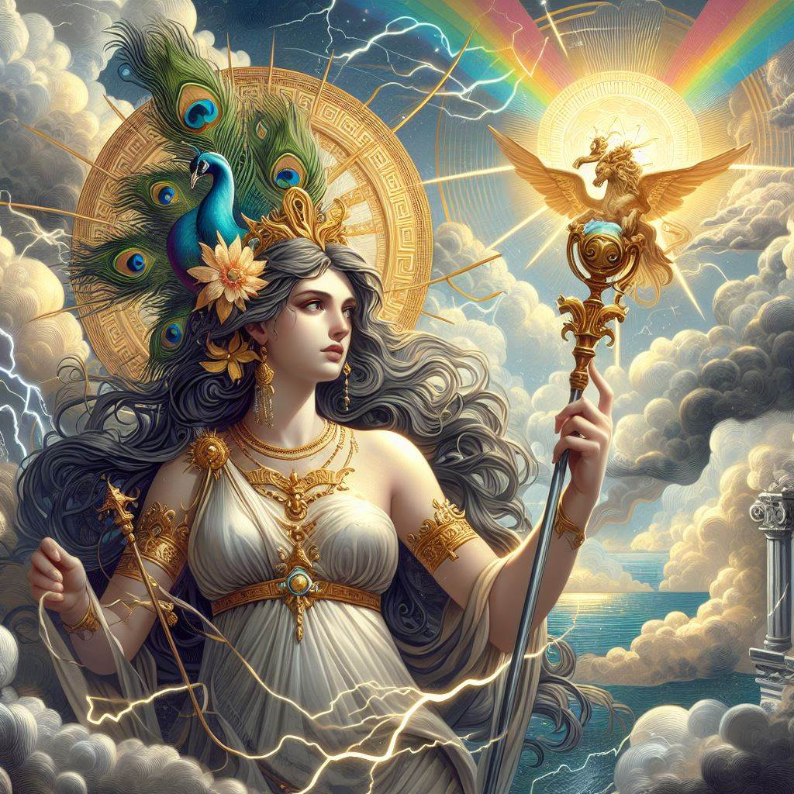
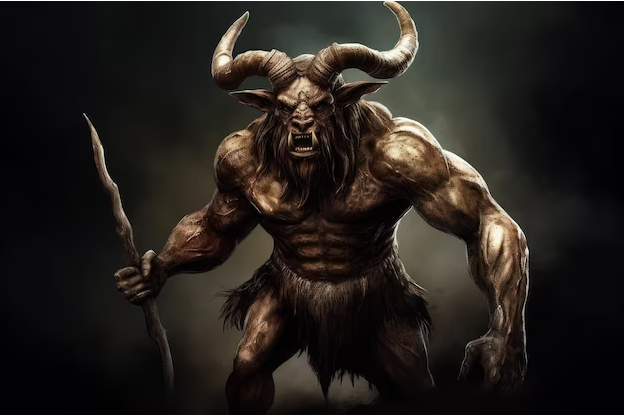
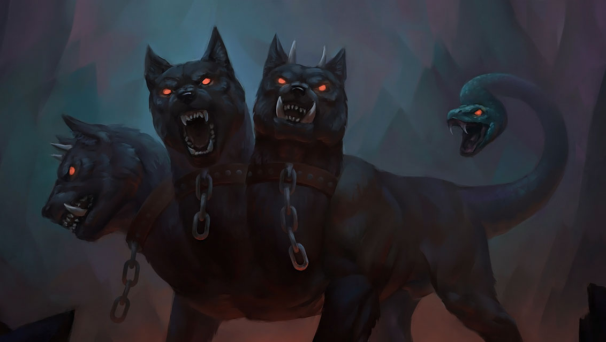

Ancient Greek mythology is a vast group of legends about gods and goddesses, heroes and monsters, warriors and fools, that were an important part of everyday life in the ancient world. Greek myths explained everything from religious rituals to the weather, and gave meaning to the world that people saw around them. While many of these myths are fanciful tales, such as the legends of greedy King Midas or heroic Hercules, other stories like the Trojan War epic have a basis in historical fact.
Here are some examples of Greek Gods and Goddesses:
Zeus was the king of the 12 Olympian Gods and the supreme God in Greek religion. Zeus is often referred to as the Father, as the God of thunder, and the "cloud gatherer." Zeus controlled the weather and offered signs and omens. Zeus generally dispensed justice, ensuring order between the gods and humanity from his high seat on Mount Olympus.
In Greek mythology, Hera is one of the most important and powerful goddesses. As queen of the gods and wife of Zeus, her presence is central to the Olympian pantheon. Hera is known for her unmatched beauty, wisdom, and powerful presence. She is depicted as a majestic goddess, with a crown on her head and a scepter in her hand. She is often described as jealous and vindictive, especially when it comes to Zeus' infidelities.
On the other hand, there are also mythological animals and monsters with great power, here are some examples:
In Greek mythology, the Minotaur was a monster with the body of a man and the head and tail of a bull. The Minotaur was the result of the union of the Cretan queen Pasiphaë with a magnificent bull. Because of its monstrous appearance, King Minos ordered the craftsman Daedalus and his son Icarus to build a huge enclosure, known as the Labyrinth, to house the beast. The Minotaur remained locked in the Labyrinth, feeding on boys and maidens who were offered to him as sacrifices each year. Eventually, he died at the hands of the Athenian hero Theseus.
Medusa, in Greek mythology, the most famous of the monster figures known as Gorgons.
She was usually represented as a winged female creature having a head of hair consisting of snakes;
unlike the Gorgons, she was sometimes represented as very beautiful. Medusa was the only Gorgon who
was mortal;
hence her slayer, Perseus, was able to kill her by cutting off her head. From the blood that spurted from her neck sprang Chrysaor and Pegasus,
her two sons by Poseidon. The severed head, which had the power of turning into stone all who
looked upon it, was given to Athena,
who placed it in her shield; according to another account, Perseus buried it in the marketplace of Argos.
Cerberus, in Greek mythology, the monstrous watchdog of the underworld. He was usually said to have three heads, though the poet Hesiod (flourished 7th century BCE) said he had 50. Heads of snakes grew from his back, and he had a serpent’s tail. He devoured anyone who tried to escape the kingdom of Hades, the lord of the underworld, and he refused entrance to living humans, though the mythic hero Orpheus gained passage by charming him with music. One of the labours of the warrior Heracles was to bring Cerberus up to the land of the living; after succeeding, he returned the creature to Hades.
Centaur, in Greek mythology, a race of creatures, part horse and part man, dwelling in the mountains of Thessaly and Arcadia. Traditionally they were the offspring of Ixion, king of the neighbouring Lapiths, and were best known for their fight (centauromachy) with the Lapiths, which resulted from their attempt to carry off the bride of Pirithous, son and successor of Ixion. They lost the battle and were driven from Mount Pelion. In later Greek times they were often represented drawing the chariot of the wine god Dionysus or bound and ridden by Eros, the god of love, in allusion to their drunken and amorous habits.